An accounting data grid composed from Material 3 primitives — audited in Figma, specified in Storybook, built with Claude Code.
Open in 20 seconds. Three artifacts, one component. I chose variant B — Clients & Accounts — because it exercises the richest interaction surface: search, per-column filters, column management, sort, selection with bulk actions, pinning, density.
I folded in variant A's row semantics — error/overdue rows, negative-value treatment, saved views — so the same component carries a financial report without a fork. That's the thread through the session: one systemic component, configured, not forked.
A clients & accounts roster — the screen an accountant lives in all day.
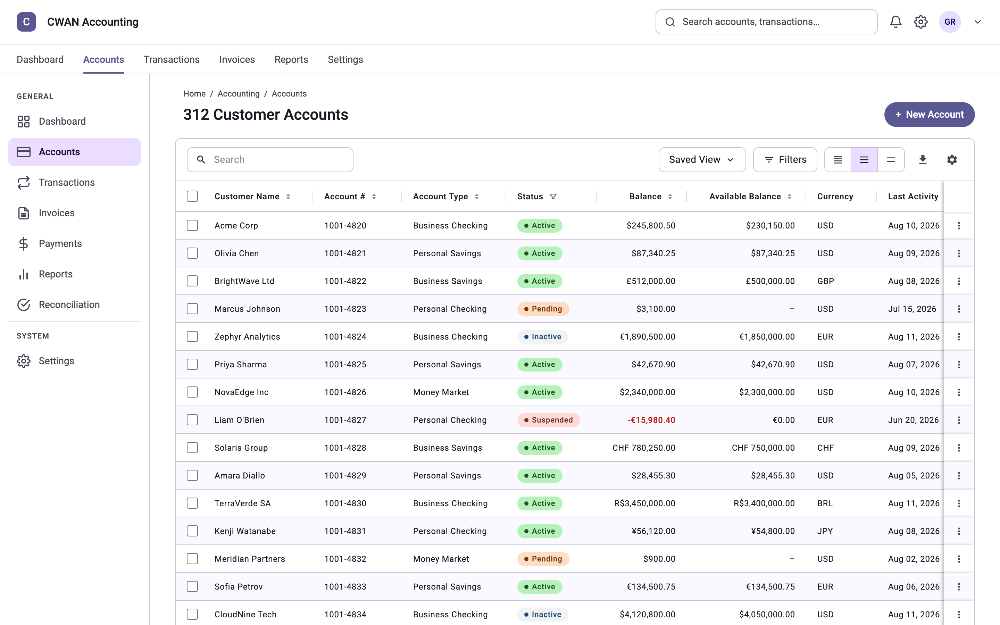
Enlarge~45s. Ground the panel in the user before the system. Four behaviours drive every decision that follows: scan, anchor, compare, trust.
This is my build of the reference pattern — the roster you'd find in any accounting platform: client, account, balance, status, currency, last activity. I come back to it at the end as the output.
M2 shipped a data table spec. M3 dropped it and never replaced it — so the design work is composition plus documented deviation.
Every departure resolves to a named token. A deviation with a token is a system decision; a deviation without one is technical debt.
~70s. The gap is the whole exercise: if M3 shipped a grid, this would be "apply the spec."
Frame each departure as a trade — what I gave up (M3 conformance, touch comfort) for what I bought (scan speed, vertical comparison, trust in color). The contentious one is reusing the error role for data values; my defence is that accountants already read red as "owed", and I mitigated color-only meaning with named badges, verified later by axe.
Accounting (sys) · Data Grid / Semantic (comp) · Density (3 modes)
The Figma name preserved as a comment on every token
The grid consumes only these — never a raw value
Components consume component tokens. Component tokens alias system tokens. Nothing, anywhere, is a raw hex.
Theming becomes a one-collection change — light to dark, CWAN to a client brand.
~60s. Land the mechanism, not the list: the Figma variable name travels into the CSS as a comment, so any reviewer can trace a pixel back to a variable in seconds. That's what made AI-generated code auditable — I could scan for raw hex and instantly see where it had gone off-system.
Four token categories mapped to M3: color (row states, value polarity, borders, badge pairs), typography (the M3 ramp verbatim, five roles), spacing (padding and heights per density), elevation (four effect styles, all directional — shadows are earned, never decorative).
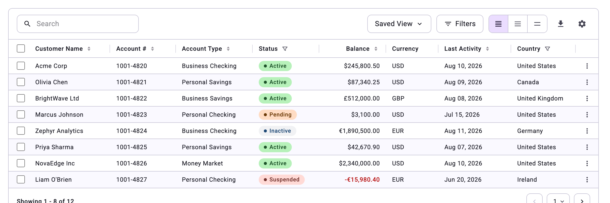
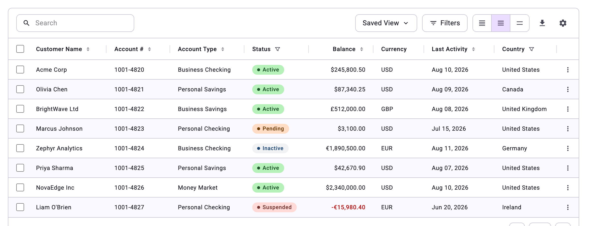
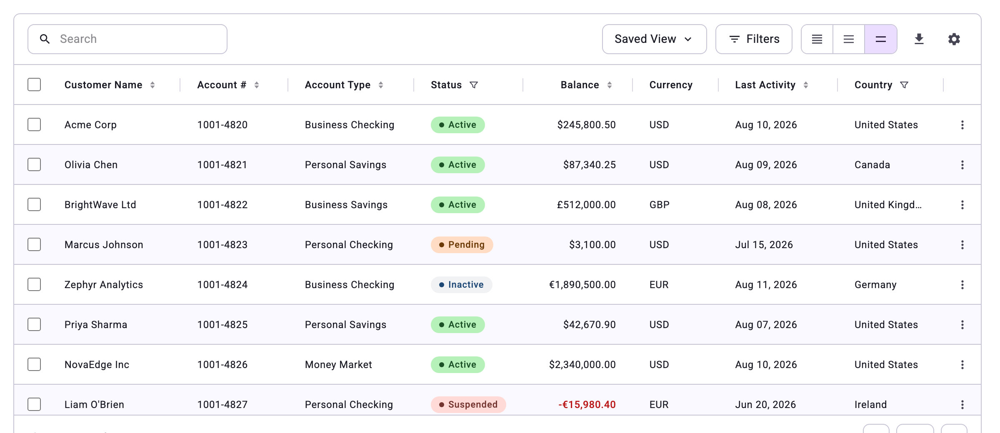
One attribute changes: [data-density] re-points row height, header height and cell padding at a different mode of the same collection. Identical DOM, identical tokens, identical column config — so a fourth tier is a row in a collection, not a new component.
~40s. Show it rather than argue it — "density is a mode" stays abstract until you see three identical grids differing only in rhythm.
If asked why comfortable exists when accountants want density: review and approval are read-at-a-glance tasks, often on a tablet. Same data, different task, same component.
Three pages, in the order I built them. Let's open the file — layer naming, Auto Layout, component properties, and the responsive and frozen-column behaviour.
Live demo — 3 minutes, four moves. Don't debug live; the next three slides carry the same content as stills.
 Enlarge
Enlarge~45s. "Resists breaking" is an evaluation criterion — speak to it directly. Two decisions buy the most resilience: instance swaps instead of variant explosion (a new badge type doesn't multiply the row's variants), and min/max constraints instead of fixed widths (a long client name doesn't blow up the layout).
Headers-never-truncate is worth flagging — a clipped column header makes a table unreadable, and it's exactly one of the rules the AI broke later.
sortable pinned editable selected hasError
Text — columnLabel cellValue savedView
Instance swap — status badge slot · trailing action slot
Variant — density · sort direction · toolbar state
| Row | Default · Hover · Selected · Read-only · Error |
| Header cell | Default · Sorted asc · Sorted desc · Filter active |
| Cell | Default · Editing · Error |
| Toolbar | Default · Search active · Filters applied |
The rule I follow: if a behaviour can live as a property on the existing set, it never becomes a second component. Every variant above has a matching Storybook story or Control.
~45s. The names are deliberately engineer-shaped: hasError, not "Alert style"; density, not "Size big/small". When property names and prop names are identical, the handoff conversation disappears.
The "one rule" line answers the panel's core question — one grid flexing by configuration, not forks. Grouped subtotal rows for a Trial Balance are a row type, not a second grid.

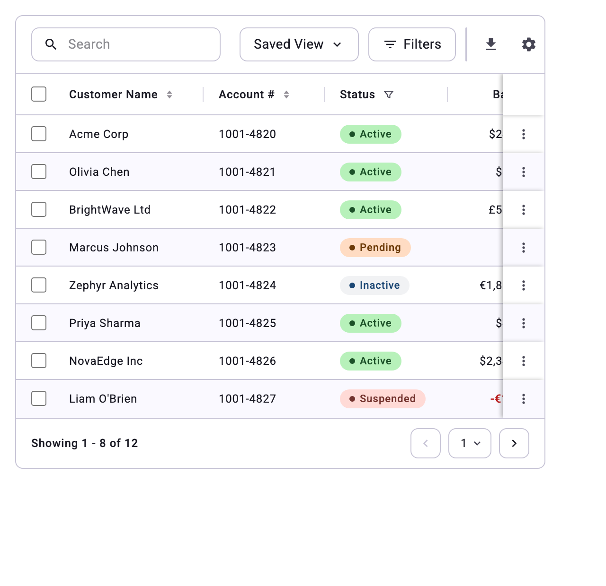
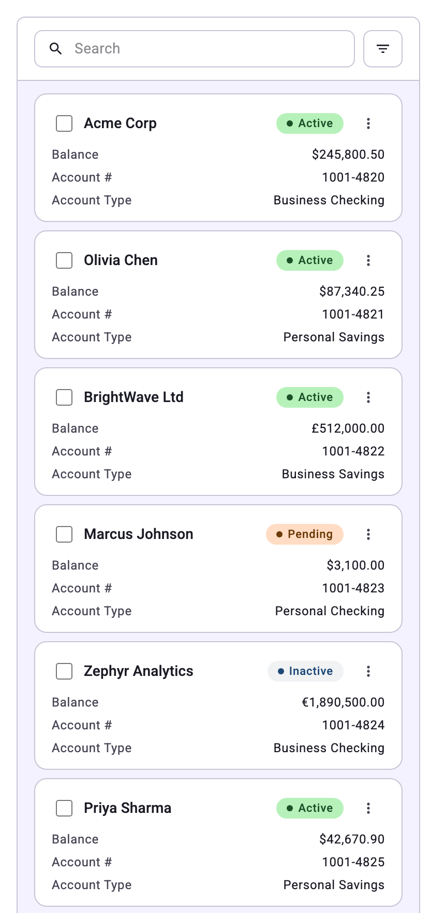
One number per column drives it: priority decides what collapses first. Identity, balance, status and account never auto-hide — the table degrades predictably instead of arbitrarily.
~40s. Responsive here is configuration, not three designs — the difference between a system that scales and three artboards that drift apart.
The mobile card fallback is the honest answer to "a data grid on a phone": accountants don't reconcile on a phone, they look one account up. So mobile optimises for finding one row, not scanning fifty.
Figma says what it should look like. Storybook says what it must do — every state, every density, keyboard and screen reader included.
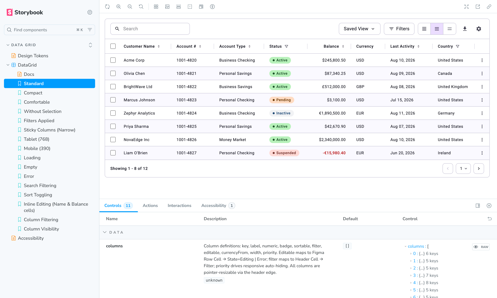
EnlargeLive demo — 90s. Open the Canvas, flip density compact → comfortable in the Controls panel and let row heights change on screen; that one interaction proves the token modes are wired end to end. Then open the Design Tokens page and point at the "read live from CSS" line.
Be upfront: I generated this code. What I own is the spec, the property mapping, the checklist, and the judgment about whether the output matched — which is the actual skill on trial.
| Prop | Control | Figma property | What it does |
|---|---|---|---|
| density | inline radio | Complete DG → Density variant, from the Density collection | Rows 32 / 40 / 48 · padding 12·8 / 16·12 / 20·16 |
| sortable | boolean | Header Cell → Sortable + Sorting variants | Sort affordance and aria-sort cycling |
| selectable | boolean | Table Row → Checkbox | Selection column, enables bulk actions |
| filters | object | Toolbar → State = Filters, with Filter Chip instances | Removable chips; Clear all empties the set |
| columns | object | Header Cell → Filter · Row Cell → Editing / Error · Pin | Per column: numeric, badge, editable, width, priority |
| loading | boolean | — state, not a Figma variant | Skeleton rows |
~40s. Point at columns — that's where the systemic claim gets cashed. A Trial Balance and a clients roster differ by the contents of that array, not by a different component.
loading is honestly marked code-only: Figma didn't need a skeleton variant, the component did. Handoff surfaces gaps in both directions.
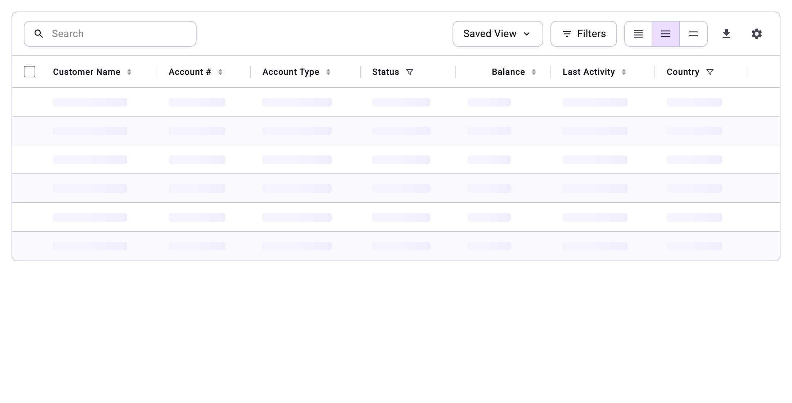
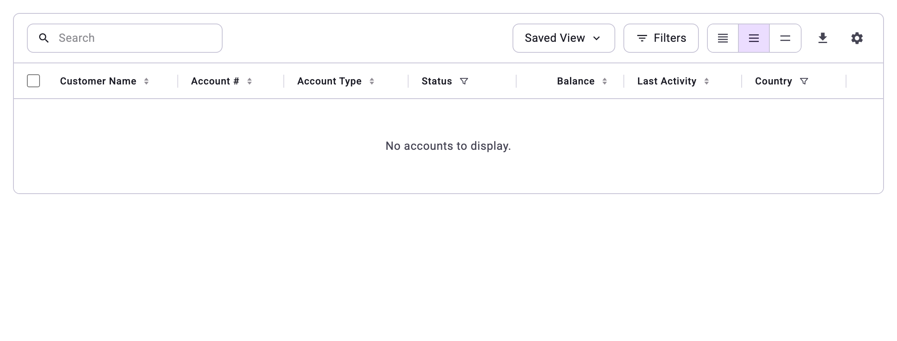
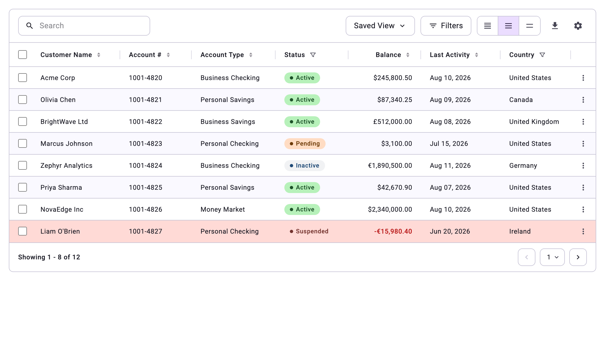
aria-sort asc → desc
Filter menu → chip appears → count updates · column visibility removes the column
Inline edit: Enter commits, bad input flags, Escape restores
Writing them turns design intent into something that fails loudly when someone breaks it — including when the someone is an AI, three prompts later.
~60s. Design point on the error state: the error is on the row, not the page. An overdue account isn't a system failure — it's data needing attention. Same token family, different semantics, which is why the badge text carries meaning and color only reinforces it.
I described these interactions in plain English and had Claude Code turn them into play functions. I can read and judge the assertions without writing them — and they're all things I care about as a designer: the announced count, the sort state, the escape hatch on an edit.
aria-sort + a live-region result count
Full keyboard: arrows, Space selects, Enter edits, Escape cancels
Contrast: negative on an error row ≈ 5:1, badges ≥ 7:1
2px focus ring visible on every row fill
across 9 story states — after the audit caught two real bugs: a Filters button that lost its accessible name on mobile, and a breakpoint that had swallowed the sticky-column range.
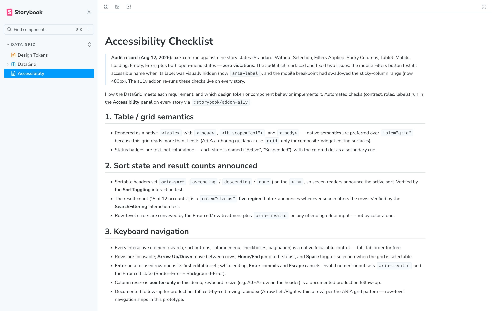
Enlarge~45s. Report the two bugs proudly, not defensively — "zero violations" is only interesting because the audit found something first. That's evidence the check was real rather than ceremonial.
Both bugs share a failure mode, and it's a design-side one: I simplified something visually on small screens and quietly removed information the non-visual experience depended on.
After that I kept to one behaviour per prompt — "menus dismiss on outside click", "headers never truncate". Compound asks produced churn in styling I hadn't touched.
~60s. The single most useful instruction in the whole prompt: never a raw hex. It turns design review into something I can do by scanning — any literal color in the diff is a design decision I didn't authorise.
Second most useful: keeping the Figma variable name as a comment — the audit trail from pixel back to variable.
What matched intent first time: token wiring, the a11y semantics, rules-based responsive collapse, and play functions generated from prose. It is excellent at anything I specified precisely — a statement about the spec, not the tool.
All caught by looking, not by reading code. Each one is a commit.
| What I saw | What went wrong | What I did |
|---|---|---|
| Menus cut off at the grid's edge | Rendered inside the scroll container | Re-prompted for one thing: portal the flyouts to body |
| Menus stayed open after choosing a value | Dismissal was never in my spec, so it invented none | Added the rule explicitly |
| Headers ellipsized at compact density | Cell truncation rule applied to headers too | Restated the Figma rule — scroll before clipping |
| Density looked right, wasn't systemic | Heights written as one-off pixel values per variant | Refactored to variables keyed on [data-density] |
| Column manager could hide the client name | No concept of an identity column | Locked it — a constraint I'd never written down |
| The story hung, the page froze | Array defaults recreated each render → re-render loop | Described the symptom, let it find the cause — in a real project this goes to an engineer |
~90s — the centre of gravity for this section. The pattern across all six: the model is faithful to what you wrote and inventive about what you didn't. Every drift traces to an unstated assumption of mine.
Dwell on two rows. The density refactor — it looked correct and was structurally wrong, which only a systems-minded reviewer catches. And the render loop — the boundary of my competence, which I'll say plainly: I described the symptom and would hand the underlying fix to an engineer.
Any raw hex in the diff is a design decision made without me. Grepping for # is a five-second design audit.
The token page computes its values live, so documentation can't drift from what shipped.
A refactor that breaks search or sort fails loudly instead of silently.
Change a token and a contrast regression is flagged before it reaches the app.
Every story against its frame at all three densities — where four of the six drifts were found.
It writes. The checks catch mechanics. I catch intent — no guardrail was ever going to flag "the identity column shouldn't be hideable."
~50s. If only one thing lands from this section, make it this slide: working responsibly with AI as a designer means you don't review the code — you build the fixtures that make deviation visible, and you keep taste as your own job.
<table> semantics over role="grid"
Variant B's chassis carrying variant A's row semantics
Prototype-grade code — the brief traded engineering for process
"It never contradicted my spec — it filled my silences, plausibly and wrongly."
Knowingly out of scope: dark mode · virtualization · a real export pipeline · grouped rows · Code Connect — in that order if this continued.
~50s. Pick two lessons and say them well rather than reading four — "the AI mirrors spec quality" and "know where your competence ends" show judgment rather than technique.
Say "knowingly" out loud on scope. The difference between a gap and a trade-off is whether you can name what you bought with it. Virtualization is the likely probe: an implementation concern that doesn't change the component's API, which is exactly why it was safe to defer.
| Surface | Configuration | What it adds |
|---|---|---|
| Clients & accounts | selectable · filters · badges · pinned identity | Built — the reference implementation |
| Trial balance | compact · numeric columns · grouped rows | A subtotal row type — not a second grid |
| P&L / reports | period columns · date-range filters · saved views | Column groups; drill-down opens a detail surface |
| Transaction register | compact · editable cells · error rows | Existing editing and error states, turned on |
| AR aging / invoices | status badges · bulk actions · overdue rows | Bulk action bar — already in the selection pattern |
| Reconciliation | two grids, shared selection | Composition of two instances — still one component |
A new report becomes a configuration and a data shape — reviewed in an afternoon, with every accessibility guarantee, density mode and token decision inherited for free.
~60s. This answers the evaluation criterion head-on: can one Data Grid flex, by configuration, to power both a financial report and a clients table? Walk the Trial Balance row — grouped rows with subtotals is the hardest case, and the answer is a row type plus an expand slot, both of which the instance-swap architecture already supports.
Likely questions:
Anything below is on demand — happy to open the file, the stories, or the diff and go as deep as you'd like.
Park here during Q&A. This slide exists so you have somewhere neutral to sit while answering, instead of leaving the thank-you slide up or scrubbing backwards.
What you can pull up quickly: the Figma variable collections and the alias chain · the Design Tokens page reading live values · any of the five interaction tests replaying · the a11y audit record · the commit history behind the six drift examples.